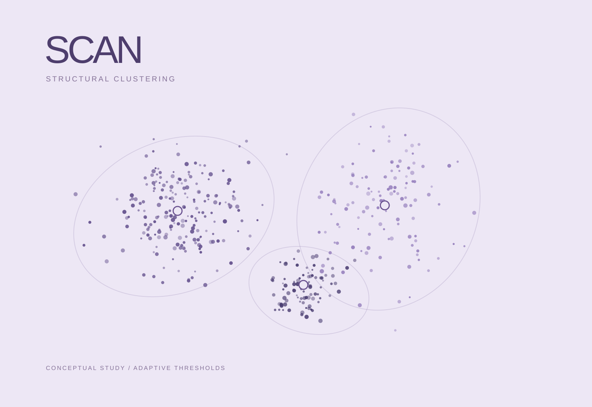

SCAN
Structural clustering and adaptive thresholds for Android malware under concept drift.

Problem
Android malware classifiers must contend with evolving feature distributions and class imbalance over time. A decision rule fitted to one period may become less reliable in later data.
Approach
Use Gaussian mixture clustering to model structure and adaptive thresholds to support malware classification under concept drift and class imbalance.
Contribution
Designed SCAN and published the framework as first author in Computer Modeling in Engineering & Sciences.
Results
The reported evaluation achieved average accuracy and F1 scores above 91% across six years.
Scope & limitations
The reported averages describe the study’s datasets and evaluation protocol; they do not guarantee performance on every future malware distribution.